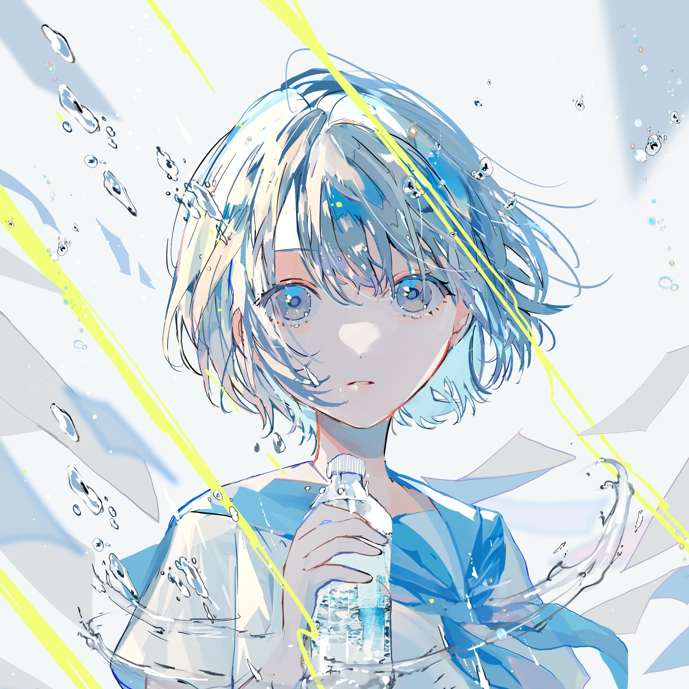

Coldin04
Hi, I'm Coldin04, a student.I love the world very much.
My major is computer network,but I love development too.
Hi, I'm Coldin04, a student.I love the world very much.
My major is computer network,but I love development too.